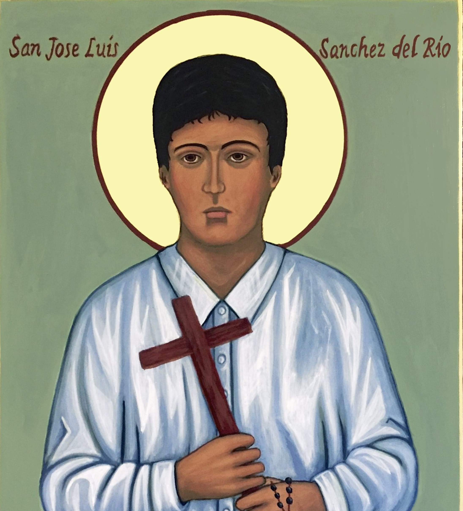
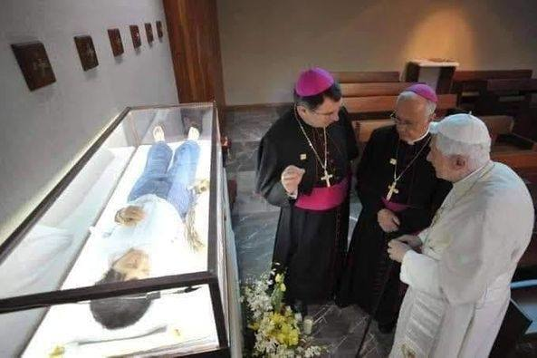
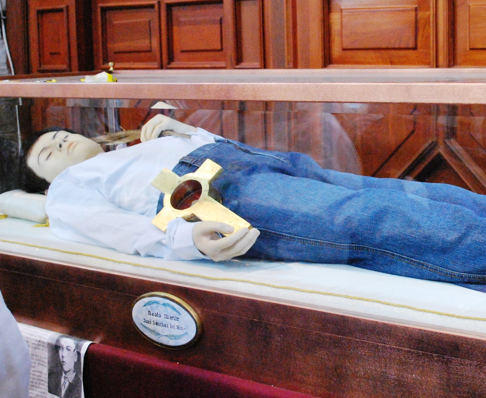
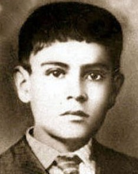

"Joselito" — O Menino Mártir Cristero
"Viva Cristo Rei! Viva Santa Maria de Guadalupe!"

Para entender José Sánchez del Río, é preciso entender o contexto em que ele viveu. Após a Revolução Mexicana, o governo de Plutarco Elías Calles aprovou em 1926 a chamada Lei Calles, que proibia o culto público, fechava seminários, expulsava sacerdotes estrangeiros e criminalizava a prática da fé católica.
A resposta popular foi imediata: dezenas de milhares de camponeses e jovens católicos pegaram em armas sob o grito de guerra "Viva Cristo Rei!", dando início à Guerra Cristera (1926–1929), um dos conflitos religiosos mais intensos do século XX.
José nasceu em 28 de março de 1913 em Sahuayo, no estado de Michoacán, México. Era o terceiro filho de Macario Sánchez e María del Río. Desde pequeno, era conhecido pela devoção intensa, pela alegria e pelo desejo ardente de servir a Deus. Seus dois irmãos mais velhos já lutavam como cristeros quando José pediu para se juntar ao movimento.
Com apenas 14 anos, José insistiu tanto com o general cristero Luis Guízar Morfín que este acabou por aceitá-lo — não como combatente, mas como porta-bandeira e cuidador de mulas. José aceitou qualquer função, desde que pudesse estar junto à causa.
Em janeiro de 1928, durante uma batalha, o cavalo do general foi abatido. José, sem hesitar, cedeu o seu próprio cavalo ao comandante para que pudesse escapar — sabendo que isso significava sua própria captura. Foi preso pelas forças federais e levado de volta a Sahuayo.
Na prisão, José foi mantido em condições desumanas. O prefeito local, que o conhecia desde criança, tentou convencê-lo a renegar a fé em troca da liberdade. José recusou repetidas vezes com serenidade. Sua mãe foi até ele e, ao invés de pedir que cedesse, o encorajou a permanecer firme.
Em 10 de fevereiro de 1928, durante a Guerra Cristera, segundo os relatos tradicionais, suas solas dos pés foram cruelmente feridas antes dele ser obrigado a caminhar até o cemitério onde seria executado. Cada passo representava sofrimento intenso, pensado para quebrar sua resistência e fazê-lo renegar a fé. Contudo, mesmo com os pés ensanguentados e dilacerados pela violência, José seguiu adiante sem abandonar suas convicções, transformando aquela dolorosa caminhada em um testemunho marcante de coragem, fidelidade e entrega a Cristo.
Em cada passo, José repetia: "Viva Cristo Rei! Viva Santa Maria de Guadalupe!" Ao chegar ao cemitério, foi esfaqueado várias vezes e, por fim, executado com um tiro na cabeça. Tinha 14 anos e 10 meses. Suas últimas palavras foram o mesmo grito de fé que repetiu durante toda a Via Crucis de seu martírio.
Uma vida de apenas 14 anos que se tornou símbolo de coragem e fé inabalável
28 Mar 1913
Nasce no estado de Michoacán, México, terceiro filho de Macario Sánchez e María del Río.
1926
O governo mexicano aprova leis que criminalizam a prática da fé católica, dando início à perseguição religiosa.
1926 · 13 anos
Católicos mexicanos pegam em armas sob o grito "Viva Cristo Rei!". Os irmãos de José se juntam ao movimento.
Jan 1928 · 14 anos
José insiste e consegue se juntar aos cristeros como porta-bandeira, sob o comando do general Guízar Morfín.
Jan 1928
Cede seu cavalo ao general para salvá-lo e é capturado pelas forças federais. É levado preso a Sahuayo.
Fev 1928
Na prisão, recusa repetidamente as propostas de liberdade em troca de apostasia. Sua mãe o encoraja a permanecer firme.
10 Fev 1928
É torturado e executado no cemitério de Sahuayo, gritando "Viva Cristo Rei!" até o último momento.
20 Nov 2005
É beatificado em Guadalajara junto a outros mártires cristeros pelo cardeal José Saraiva Martins, representando o Papa João Paulo II.
16 Out 2016
É canonizado pelo Papa Francisco em Roma, tornando-se o mais jovem mártir da Guerra Cristera elevado aos altares.
Os prodígios reconhecidos pela Igreja para sua beatificação e canonização
01
México
Uma cura considerada medicamente inexplicável foi reconhecida pelo Vaticano após investigação rigorosa das comissões médica e teológica. O caso envolveu uma recuperação súbita e completa atribuída à intercessão de José Sánchez del Río, abrindo o caminho para sua beatificação em 2005 junto aos demais mártires cristeros.
Aprovado em 2004 · para a Beatificação02
México
Um segundo milagre atribuído à intercessão de José foi investigado e aprovado pelo Dicastério para as Causas dos Santos. A cura, considerada científica e medicamente inexplicável, habilitou sua canonização pelo Papa Francisco em outubro de 2016, tornando-o santo da Igreja universal.
Aprovado em 2015 · para a CanonizaçãoImagens da vida, do martírio e da canonização de José Sánchez del Río



As fotografias devem ser obtidas de fontes de domínio público ou com autorização dos detentores dos direitos.
Documentação utilizada para a elaboração deste perfil
Canonização de José Sánchez del Río — Cobertura Oficial
Vatican News · outubro de 2016
Viva Cristo Rei! — A Guerra Cristera e seus Mártires
Jean Meyer · Editora Perspectiva, 2013
Cristiada (For Greater Glory)
Dir. Dean Wright · 2012 · Baseado em fatos reais da Guerra Cristera
Senhor Jesus Cristo, Tu que deste a José, ainda menino, a força de testemunhar a fé até o derramamento de sangue, concede-nos, por sua intercessão, a coragem de professar nossa fé sem medo e sem vergonha.
Ele poderia ter salvo a própria vida com uma simples palavra de negação. Preferiu morrer gritando o Teu nome. Que seu exemplo nos ensine que nenhum bem terreno vale mais do que a fidelidade a Ti.
São José Sánchez del Río, intercede por nós e por todos os que hoje sofrem perseguição por causa da fé. Que o teu grito — Viva Cristo Rei! — ressoe em nossos corações como um chamado à santidade corajosa. Amém.
· Para uso privado · Aprovação eclesiástica recomendada ·